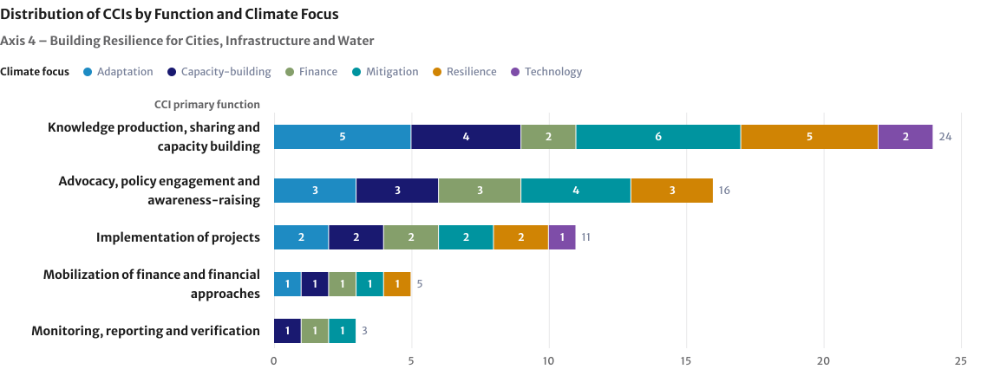
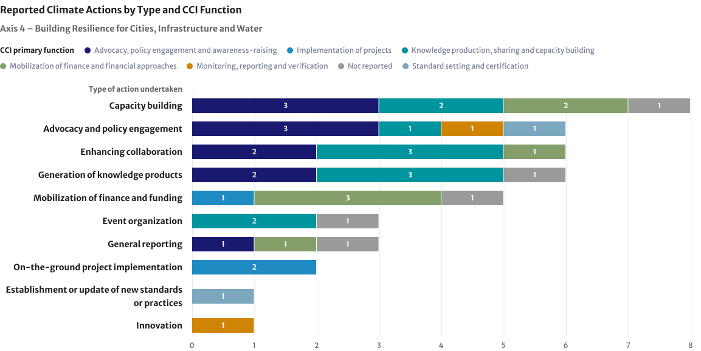
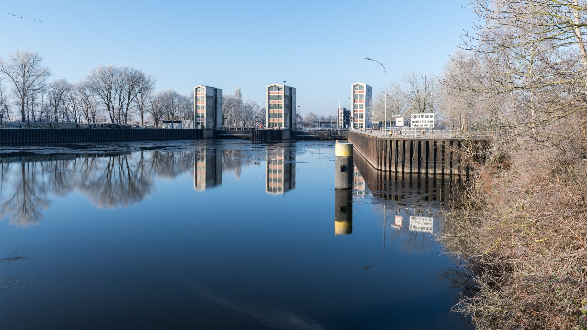

Building Resilience for Cities, Infrastructure and Water
Axis 4 brings together efforts on multilevel governance, sustainable and resilient buildings, resilient urban development, mobility and infrastructure, resilient water management and sanitation, and zero waste and the circular economy.
Key Objectives
Objective 11
Multilevel governance
Objective 12
Sustainable and resilient constructions and buildings
Objective 13
Resilient urban development, mobility and infrastructure
Objective 14
Resilient water management and sanitation
Objective 15
Zero waste and circular economy
Axis 4
At a glance
Global progress
Cities are increasingly central to national climate plans, as the number of NDCs with strong urban content doubled from 52 to 104 (2024–2026)
The number of cities with people-centred adaptation measures rose from 308 to 392 (2024–2025)
The number of countries with multi-hazard early warning systems rose from 108 to 119 between 2024 and 2025
Remaining gaps
The number of people living in water-stressed basins is higher in 2025 than it was in 2015
Globally comparable evidence on the climate resilience of sanitation infrastructure and services remains limited, highlighting a critical gap in measuring adaptation implementation and outcomes
On zero waste, only 6.9 per cent of material inputs came from secondary materials in 2021, and only 22.3 per cent of e-waste was formally recycled in 2022
NAZCA
Eighteen of the 83 Cooperative Climate Initiatives (CCIs) that reported progress to NAZCA under the common reporting framework identify their climate-related goals as contributing to Axis 4. Knowledge production, sharing and capacity-building is the most frequently represented CCI function, with a strong focus on ‘mitigation’, followed closely by ‘adaptation’ and ‘resilience’. Capacity-building is the most frequently reported action type.
Plans to Accelerate Solutions
Total PAS under this axis: 20, covering 5 objectives
Number of PAS sharing progress in the June 26 reporting round: 12
COP 31 priorities
Under this axis, the special emphasis is on accelerating zero-waste systems and strengthening circularity, as well as promoting climate-resilient cities.
Axis 4 / Section I
Global Climate Action in 2026 - Insights from the UNFCCC Climate Weeks
The Global Climate Action Agenda (GCAA) presents opportunities to advance and accelerate implementation at scale. It is in that spirit that Climate Weeks in Yeosu, Republic of Korea (held in April) and Baku, Azerbaijan (September), brought together a broad range of stakeholders – including national delegations and non‑Party stakeholders (NPS) – with a strong focus on showcasing practical climate solutions, including those linked to building resilience for cities, infrastructure and water.
Countries across the globe shared how they are moving from planning to execution. They exchanged ideas on real-economy transitions in urban development, among other themes. They explored ways to get more finance flowing to where it’s needed, like adaptation for vulnerable communities and in responding to losses faced by those in the frontline of climate change.
Adaptation action was shown to be entering a more operational and implementation-focused phase, with growing emphasis on strengthening resilience outcomes, improving decision-relevant data systems, and supporting evidence-informed implementation. A recurring message was that advancing the implementation of adaptation requires working through a full logical chain: moving from the UAE Framework’s Global Goal on Adaptation (GGA) Targets and Indicators, through risk pathways that ground the rationale for action, essential solutions that package change, deployment architecture that finances implementation, and adaptation orchestration that ensures delivery reaches the last mile, with monitoring, evaluation and learning closing the loop. Discussions relating to implementation of the UAE Framework for Global Climate Resilience highlighted the importance of improving the usability of adaptation-related information and strengthening links between data, planning and decision-making processes.
Several sessions highlighted practical tools and approaches already being applied at country level, including risk mapping, climate impact pathways, vulnerability assessments, and locally led adaptation approaches. Participants also stressed that effective adaptation systems must remain flexible and iterative, enabling countries and communities to adjust actions over time as climate risks evolve and lessons emerge from implementation.
Finally, participants emphasized that monitoring, evaluation and learning (MEL) systems are increasingly being used not only to track activities, but also to inform policy, strengthen accountability, and improve the effectiveness of adaptation support.
The Implementation Forums organized during CW3 and CW4 were focused on supporting efforts to accelerate climate action by creating a dedicated space where Parties and NPS could meet on equal footing to exchange practical solutions, align priorities, and collectively discuss how to move from ambition to implementation at scale. Under Axis 4, one of the lead high-impact, scalable solutions emerging from the Implementation Labs and Impact Dialogues is described below:
Jakarta’s integrated mobility package illustrates how cities can deliver near‑term emissions reductions and resilience by combining infrastructure, regulation and service integration. The solution brings together MRT expansion, segregated BRT corridors, pedestrianized last‑mile access, formalization of informal transport, and a unified payment card across all transport modes.
This approach treats mobility as a system rather than isolated projects, delivering inclusivity, air‑quality benefits and climate gains simultaneously.
Key implementation value
Systems approach rather than mode‑by‑mode projects
Scalability across fast‑growing cities
Strong social and economic co‑benefits
Axis 4 / Section II
Progress on global socio-economic indicators (GSIs)
Of the 20 indicators under this axis, 3 show progress, 1 shows no progress and 16 have insufficient data. There are 16 new indicators this year.
Indicators at a glance
3 of 20
Indicators show progress
1 of 20
Indicator shows no progress
16 of 20
Indicators have insufficient data
16 new
Indicators added this year
Across Axis 4, progress in policies, planning and institutional readiness is outpacing improvements in physical resilience. Cities, regions and countries are increasingly integrating adaptation into climate strategies, expanding early warning systems and improving access to essential services. Yet exposure to climate hazards continues to grow: more people lived in flood zones and water-stressed basins in 2025 than in 2015, which highlights a persistent gap between commitments, implementation and measurable resilience outcomes.
Under Objective 11, the number of Nationally Determined Contributions (NDCs) with strong urban and subnational content doubled from 52 in 2024 to 104 in 2026, a sign that the new round of NDCs treats cities and regions as implementation partners. However, stronger policy integration does not necessarily translate into implementation, underscoring the need to increase subnational financing, institutional capacity and delivery.
Under Objective 12, all three indicators are new. Showing a positive trend when compared to 2015, the number of countries with policies on energy-efficiency retrofits for low-income households increased from two in that year to 13 in 2025. Significant measurement gaps remain in assessing climate-resilient buildings, retrofits and infrastructure, though.
Under Objective 13, early warning systems and people-centred adaptation measures show encouraging progress. The number of countries reporting multi-hazard early warning systems rose from 108 in 2024 to 119 in 2025, strengthening the foundations for climate-informed preparedness and anticipatory action. Similarly, cities with people-centred adaptation measures grew from 205 in 2017 and 304 in 2024 to 392 in 2025. However, comparable global indicators for climate-resilient urban mobility and infrastructure remain limited.
Under Objective 14, eight new indicators point to an improvement in access to water and essential services, but also to climate-related water risks intensifying. Safely managed drinking water reached 74 per cent of the population in 2024 (up from 68 per cent in 2015), while access to safely managed sanitation services reached 58 per cent, also in 2024. Over the same period, the population living in flood zones grew from 1.3 to 1.4 billion, and the urban population in water-stressed basins grew from 2.6 to 2.9 billion. While these data provide an important proxy for the Global Goal on Adaptation’s (GGA) water and sanitation targets, globally comparable evidence on the climate resilience of sanitation infrastructure and services remains limited, highlighting a critical gap in measuring adaptation implementation and outcomes.
Under Objective 15, the four indicators are also new. Global data shows a global circularity rate of 6.9 per cent in 2025. Of the 62 million tonnes of e-waste generated in 2022, 22.3 per cent was documented as formally collected and recycled, and plastic waste reached 353 million tonnes in 2019. While updated global and national datasets are available, gaps in consistent reporting on waste collection, controlled disposal, recycling and waste prevention continue to constrain assessments of implementation progress.
Axis 4 / Section III
Progress of plans and initiatives
Key trends from NAZCA, highlights of initiative self-tracking progress, case studies and the Plans to Accelerate Solutions (PAS) under Axis 4.

Knowledge production, sharing and capacity-building is the most frequently represented CCI function, followed by Advocacy, policy engagement and awareness-raising and Implementation of projects. Reported climate focuses span the categories shown in the chart, with ‘mitigation’ and ‘adaptation’ both represented. Monitoring, reporting and verification appears among the less common CCI functions.

Capacity-building is the most frequently reported action type. Enhancing collaboration and Generation of knowledge products are also prominent, followed by Advocacy and policy engagement and Mobilization of finance and funding. Notably, Axis 4 records the highest ratio of reported actions to CCIs across the six axes. This points to a particularly high volume of reported activity relative to the number of participating initiatives, with capacity-building, collaboration and knowledge-sharing featuring prominently.
The information in the highlights of CCI self-reported action was directly submitted by CCIs and, therefore, the views expressed do not necessarily reflect the views of the secretariat.
Plans to Accelerate Solutions
Under Axis 4, 20 Plans to Accelerate Solutions (PAS) cover all five objectives. In the June 2026 reporting round, 12 PAS shared progress.
16 PAS
Across all five key objectives
191
Planned actions
12 of 16
PAS reported in June 2026
List of activation groups and PAS
Axis 4 / Section IV
COP 31 Action Agenda

Unlocking the climate action potential of waste management through scalable circular economy solutions and Zero Waste systems and promoting Climate-Resilient Cities to ensure liveable places for everyone
Accelerating zero-waste systems and integrated urban solutions supports climate-resilient cities as interconnected drivers of mitigation, adaptation, resilience, and sustainable development. A people-centred approach recognizing the importance of regional differentiation is also key to ensure that solutions are tailored to local governance structures, climate risks, and financing capacity.
Strengthening circularity, on the other hand, can also bring about co-benefits for food systems, biodiversity, industrial efficiency, urban resilience, public health, and livelihoods, while reducing pollution and resource use. This can be achieved through expanded waste infrastructure, waste prevention programmes, reuse and repair systems, circular procurement approaches, circular business models, and the integration of informal workers into value chains.
Additional efforts this year are geared towards mobilizing blended and public subnational finance for integrated urban resilience and decarbonization investments (including buildings, transport, water, cooling, and zero-waste systems), alignment to ensure national level climate plans, policies and regulations are mainstreamed at the local level, and for subnational action to mainstream and facilitate delivery of the Zero Waste principle (e.g., possible roadmaps towards 2030).
Axis 4 / Section V
Global Climate Action at COP 31
A summary of Global Climate Action [solutions] under Axis 4 showcased during COP 31 will be made available here after the Conference. The GCA programme at COP 31 is available here: LINK